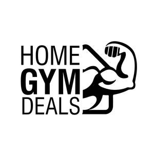

Trade Mark Journal No.2025/040 3 October 2025
UK00004269163 25 September 2025 (28)

- Class 28
- Dumbbells; Dumbbells for weight lifting; Kettlebells; Dumbbell racks; Dumb-bells; Dumbbell shafts for weight lifting; Barbells; Dumb-bells [for weight lifting]; Barbells for weight lifting; Exercise weights; Wrist weights for exercise; Dumb-bell shafts [for weight lifting]; Squat machines; Weight lifting machines for exercise; Weight lifting benches; Leg weights for exercising; Storage racks for exercise weights; Ankle and wrist weights for exercise; Wrist and ankle weights for exercise; Squat racks; Wrist straps for weightlifting; Exercise treadmills; Weight lifting gloves; Gym balls; Gym balls for yoga; Chest exercisers; Leg weights for athletic use; Pilates toning balls; Machines incorporating weights for use in physical exercise; Rollers for stationary exercise bicycles; Exercise bicycles (Rollers for stationary -); Lifting grips for weight lifting; Leg weights for sports training; Leg weights [sports articles]; Exercise pulleys; Tapes with weights for balancing tennis racquets; Weight lifting belts; Tungsten weights for fishing; Treadmills for use in physical exercise; Chest expanders [exercisers]; Belts for weightlifting; Exercise steppers; Fitness exercise machines; Exercise hand grippers; Push-up handles; Stationary exercise bicycles and rollers therefor; Exercise benches; Exercise balls; Weight lifting belts [sports articles]; Exercise trampolines; Belts (Weight lifting -) [sports articles]; Rotating push-up handles; Stationary exercise bicycles; Bicycles (Stationary exercise -); Exercise bicycles (Stationary -); Fitness steppers; Fishing weights; Bar-bells [for weight lifting]; Gymnastic benches; Exercise bars; Benches for gymnastic use; Exercisers [expanders]; Exercise bands; Gymnastic training stools; Yoga straps; Physical exercises (Machines for -); Manual leg exercisers; Machines for physical exercises; Body-building apparatus [exercise]; Stands for jogging machines; Grip bands for squash rackets; Manually operated rings for lower and upper body resistance exercise; Grip balls in the nature of rubber ball for hand exercise; Abdominal wheel rollers for fitness purposes; Baby gyms; Spring bar tension sets for use in exercising; Grip bands for badminton rackets; Exercise bikes; Grip bands for tennis rackets; Back supports [belts] for weightlifters; Adhesive abdominal exercise belts, electric, for muscle stimulation; Spring bars for exercise; Elliptical trainers; Swivels for punching bags; Rowing machines for fitness purposes.
Saqlain Irshad